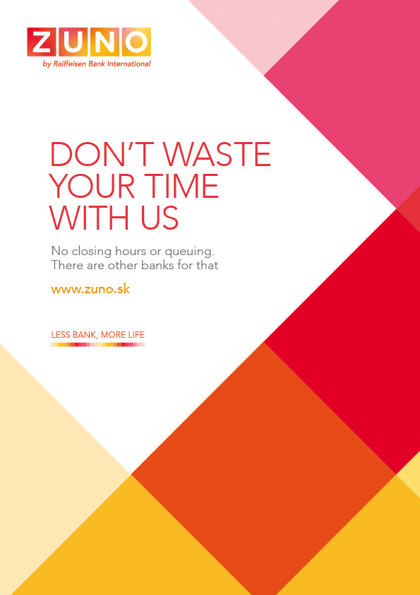

ZUNO
So you want to launch a bank brand stripped of all the things people hate about banking?
The Brief
Launch a bank brand built on one radical premise: strip out everything people hate about banking. Then grow it — new products, new markets — without losing that premise along the way.
The Work
ZUNO was Radovan's top responsibility for over two years. He took the brand from its initial launch in Slovakia through a full product portfolio expansion and into the Czech market — across TVC, digital, OOH, and print. Every touchpoint had to feel like it came from a bank that genuinely didn't want to waste your time, insult your intelligence, or bury the important stuff in fine print.
The Results
The campaign won Slovakia's first ever EURO Effie — proving the work didn't just build a brand, it built a business. A startup bank broke into two markets on the back of creative that treated people like adults. Turns out that's a competitive advantage.

Agency: Saatchi&Saatchi Slovakia
Year: 2010–12